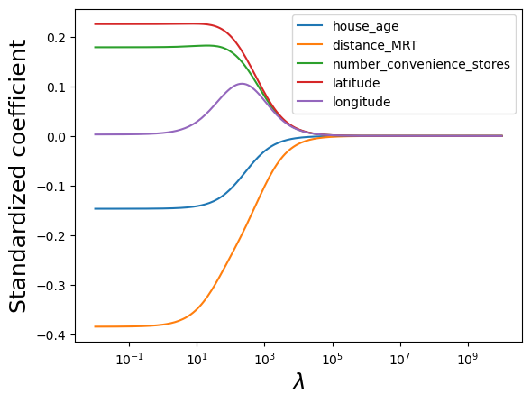
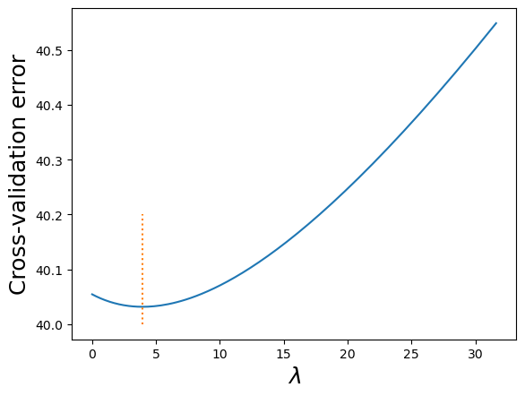
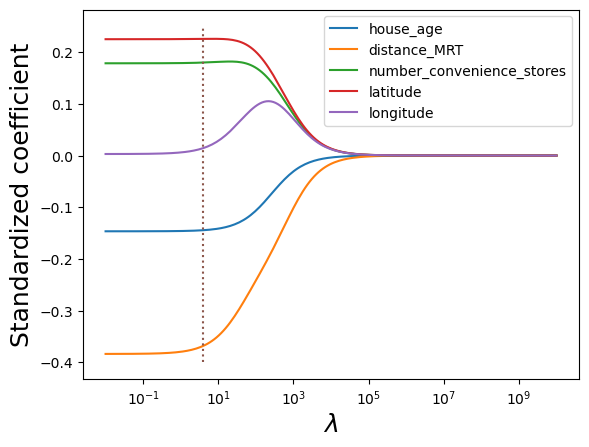
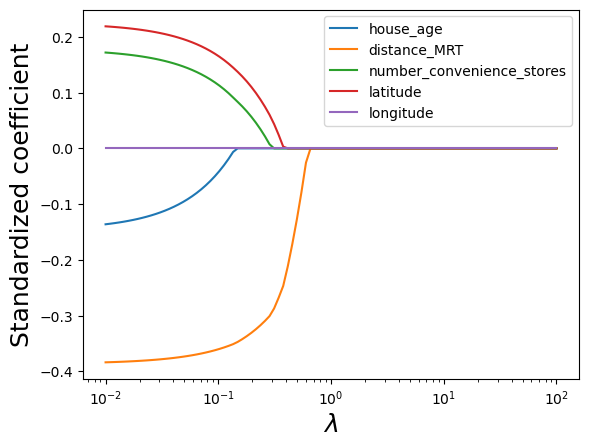
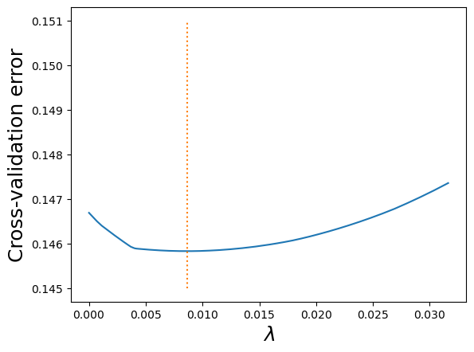

import pandas as pd
import numpy as np
import seaborn as sns
import matplotlib.pyplot as plt
from sklearn.linear_model import Ridge, RidgeCV, Lasso, LassoCV, LogisticRegressionCV, LogisticRegression
from sklearn.preprocessing import StandardScaler
from sklearn.metrics import r2_score, accuracy_score
from sklearn.model_selection import cross_val_score, cross_val_predict5 Ridge regression and Lasso
Read section 6.2 of the book before using these notes.
Note that in this course, lecture notes are not sufficient, you must read the book for better understanding. Lecture notes are just implementing the concepts of the book on a dataset, but not explaining the concepts elaborately.
trainf = pd.read_csv('./Datasets/house_feature_train.csv')
trainp = pd.read_csv('./Datasets/house_price_train.csv')
testf = pd.read_csv('./Datasets/house_feature_test.csv')
testp = pd.read_csv('./Datasets/house_price_test.csv')
train = pd.merge(trainf,trainp)
test = pd.merge(testf,testp)
train.head()| house_id | house_age | distance_MRT | number_convenience_stores | latitude | longitude | house_price | |
|---|---|---|---|---|---|---|---|
| 0 | 210 | 5.2 | 390.5684 | 5 | 24.97937 | 121.54245 | 2724.84 |
| 1 | 190 | 35.3 | 616.5735 | 8 | 24.97945 | 121.53642 | 1789.29 |
| 2 | 328 | 15.9 | 1497.7130 | 3 | 24.97003 | 121.51696 | 556.96 |
| 3 | 5 | 7.1 | 2175.0300 | 3 | 24.96305 | 121.51254 | 1030.41 |
| 4 | 412 | 8.1 | 104.8101 | 5 | 24.96674 | 121.54067 | 2756.25 |
5.1 Ridge regression
Let us develop a ridge regression model to predict house price based on the five house features.
#Taking the log transform of house_price as house prices have a right-skewed distribution
y = np.log(train.house_price)5.1.1 Standardizing the predictors
#Standardizing predictors so that each of them have zero mean and unit variance
#Filtering all predictors
X = train.iloc[:,1:6];
#Defining a scaler object
scaler = StandardScaler()
#The scaler object will contain the mean and variance of each column (predictor) of X.
#These values will be useful to scale test data based on the same mean and variance as obtained on train data
scaler.fit(X)
#Using the scaler object (or the values of mean and variance stored in it) to standardize X (or train data)
Xstd = scaler.transform(X)5.1.2 Optimizing the tuning parameter λ
#The tuning parameter lambda is referred as alpha in sklearn
#Creating a range of values of the tuning parameter to visualize the ridge regression coefficients
#for different values of the tuning parameter
alphas = np.logspace(10,-2,200)#Finding the ridge regression coefficients for increasing values of the tuning parameter
coefs = []
for a in alphas:
ridge = Ridge(alpha = a)
ridge.fit(Xstd, y)
coefs.append(ridge.coef_)#Visualizing the shrinkage in ridge regression coefficients with increasing values of the tuning parameter lambda
plt.xlabel('xlabel', fontsize=18)
plt.ylabel('ylabel', fontsize=18)
plt.plot(alphas, coefs)
plt.xscale('log')
plt.xlabel('$\lambda$')
plt.ylabel('Standardized coefficient')
plt.legend(train.columns[1:6]);
#Let us use cross validation to find the optimal value of the tuning parameter - lambda
#For the optimal lambda, the cross validation error will be the least
#Note that we are reducing the range of alpha so as to better visualize the minimum
alphas = np.logspace(1.5,-3,200)
ridgecv = RidgeCV(alphas = alphas,store_cv_values=True)
ridgecv.fit(Xstd, y)
#Optimal value of the tuning parameter - lambda
ridgecv.alpha_3.939829130085526#Visualizing the LOOCV (leave one out cross validatation error vs lambda)
plt.xlabel('xlabel', fontsize=18)
plt.ylabel('ylabel', fontsize=18)
plt.plot(ridgecv.alphas,ridgecv.cv_values_.sum(axis=0))
plt.plot([ridgecv.alpha_,ridgecv.alpha_],[40,40.2],':')
plt.xlabel('$\lambda$')
plt.ylabel('Cross-validation error');
Note that the cross validation error is minimum at the optimal value of the tuning parameter.
#Visualizing the shrinkage in ridge regression coefficients with increasing values of the tuning parameter lambda
alphas = np.logspace(10,-2,200)
plt.xlabel('xlabel', fontsize=18)
plt.ylabel('ylabel', fontsize=18)
plt.plot(alphas, coefs)
plt.plot([ridgecv.alpha_,ridgecv.alpha_],[-0.4,0.25],':')
plt.xscale('log')
plt.xlabel('$\lambda$')
plt.ylabel('Standardized coefficient')
plt.legend(train.columns[1:6]);
5.1.3 RMSE on test data
#Test dataset
Xtest = test.iloc[:,1:6]
#Standardizing test data
Xtest_std = scaler.transform(Xtest)#Using the developed ridge regression model to predict on test data
ridge = Ridge(alpha = ridgecv.alpha_)
ridge.fit(Xstd, y)
pred=ridge.predict(Xtest_std)#RMSE on test data
np.sqrt(((np.exp(pred)-test.house_price)**2).mean())405.64878431933295Note that the RMSE is similar to the one obtained using least squares regression on all the five predictors. This is because the coefficients were required to shrink very slightly for the best ridge regression fit. This may happen when we have a low number of predictors, where most of them are significant. Ridge regression is likely to perform better than least squares in case of a large number of predictors, where an OLS model will be prone to overfitting.
5.1.4 Model coefficients & \(R\)-squared
#Checking the coefficients of the ridge regression model
ridge.coef_array([-0.14444475, -0.3683359 , 0.17988341, 0.22567002, 0.01429926])Note that none of the coefficients are shrunk to zero. The coefficient of longitude is smaller than the rest, but not zero.
#R-squared on train data for the ridge regression model
r2_score(ridge.predict(Xstd),y)0.6993726041206049#R-squared on test data for the ridge regression model
r2_score(pred,np.log(test.house_price))0.7572762313360965.2 Lasso
Let us develop a lasso model to predict house price based on the five house features.
5.2.1 Standardizing the predictors
We have already standardized the predictors in the previous section. The standardized predictors are the NumPy array object Xstd.
5.2.2 Optimizing the tuning parameter λ
#Creating a range of values of the tuning parameter to visualize the lasso coefficients
#for different values of the tuning parameter
alphas = np.logspace(2,-2,100)#Finding the lasso coefficients for increasing values of the tuning parameter
lasso = Lasso(max_iter = 10000)
coefs = []
for a in alphas:
lasso.set_params(alpha=a)
lasso.fit(Xstd, y)
coefs.append(lasso.coef_)#Visualizing the shrinkage in lasso coefficients with increasing values of the tuning parameter lambda
plt.xlabel('xlabel', fontsize=18)
plt.ylabel('ylabel', fontsize=18)
plt.plot(alphas, coefs)
plt.xscale('log')
plt.xlabel('$\lambda$')
plt.ylabel('Standardized coefficient')
plt.legend(train.columns[1:6]);
Note that lasso performs variable selection. For certain values of lambda, some of the predictor coefficients are zero, while others are non-zero. This is different than ridge regression, which only shrinks the coefficients, but doesn’t do variable selection.
#Let us use cross validation to find the optimal value of the tuning parameter - lambda
#For the optimal lambda, the cross validation error will be the least
#Note that we are reducing the range of alpha so as to better visualize the minimum
alphas = np.logspace(-1.5,-5,200)
lassocv = LassoCV(alphas = alphas, cv = 10, max_iter = 100000)
lassocv.fit(Xstd, y)
#Optimal value of the tuning parameter - lamda
lassocv.alpha_0.00865338307114046#Visualizing the LOOCV (leave one out cross validatation error vs lambda)
plt.xlabel('xlabel', fontsize=18)
plt.ylabel('ylabel', fontsize=18)
plt.plot(lassocv.alphas_,lassocv.mse_path_.mean(axis=1))
plt.plot([lassocv.alpha_,lassocv.alpha_],[0.145,0.151],':')
plt.xlabel('$\lambda$')
plt.ylabel('Cross-validation error');
The 10-fold cross validation error minimizes at lambda = 0.009.
#Visualizing the shrinkage in lasso coefficients with increasing values of the tuning parameter lambda
alphas = np.logspace(2,-2,100)
plt.xlabel('xlabel', fontsize=18)
plt.ylabel('ylabel', fontsize=18)
plt.plot(alphas, coefs)
plt.xscale('log')
plt.xlabel('$\lambda$')
plt.ylabel('Standardized coefficient')
plt.legend(train.columns[1:6]);
5.2.3 RMSE on test data
#Using the developed lasso model to predict on test data
lasso = Lasso(alpha = lassocv.alpha_)
lasso.fit(Xstd, y)
pred=lasso.predict(Xtest_std)#RMSE on test data
np.sqrt(((np.exp(pred)-test.house_price)**2).mean())400.85801088048185.2.4 Model coefficients & \(R\)-squared
#Checking the coefficients of the lasso model
lasso.coef_array([-0.13758288, -0.38414914, 0.17276584, 0.21970825, 0. ])Note that the coefficient of longitude is shrunk to zero. Lasso performs variable selection.
#R-squared on train data for the lasso model
r2_score(lasso.predict(Xstd),y)0.6931007715680897#R-squared on test data for the lasso model
r2_score(pred,np.log(test.house_price))0.75269686602836555.3 Lasso/Ridge Classification
The Ridge and Lasso penalties are added from inside the same LogisticRegression object, they don’t have their own objects like they do in regression.
# Data
train = pd.read_csv('Datasets/Social_Network_Ads_train.csv')
test = pd.read_csv('Datasets/Social_Network_Ads_test.csv')# Predictors and response
X_train = train[['Age', 'EstimatedSalary']]
y_train = train['Purchased']
X_test = test[['Age', 'EstimatedSalary']]
y_test = test['Purchased']# Creating the model
# penalty=None means regular logistic Regression
# penalty=l2 means Ridge Classification
# penalty=l1 means Lasso Classification
# C = 1/lambda
model = LogisticRegression(penalty='l2', C = 1)# Scale
sc = StandardScaler()
sc.fit(X_train)
X_train_scaled = sc.transform(X_train)
X_test_scaled = sc.transform(X_test)
# Train
model.fit(X_train_scaled, y_train)
y_pred = model.predict(X_test_scaled) # threshold = 0.5 here
# Evaluate
print(accuracy_score(test.Purchased, y_pred)*100)
# Probs
y_pred_probs = model.predict_proba(X_test_scaled)88.05.3.1 Cross-validation to find optimal C
# a list of possible C values
Cs = np.logspace(-1,1)
# Cs = the C values we want to try out
# cv = number of folds, 3,5,10 - if no input given, 5-fold
# penalty = Ridge or Lasso
model_cv = LogisticRegressionCV(Cs = Cs, cv=5, penalty='l2')
model_cv.fit(X_train_scaled, y_train)
model_cv.C_[0]1.3894954943731375model = LogisticRegression(penalty='l2', C = model_cv.C_[0])
model.fit(X_train_scaled, y_train)
y_pred = model.predict(X_test_scaled) # threshold = 0.5 here
# Evaluate
print(accuracy_score(test.Purchased, y_pred)*100)88.0